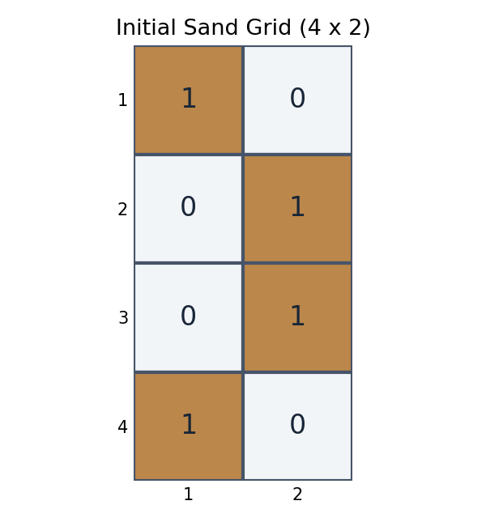
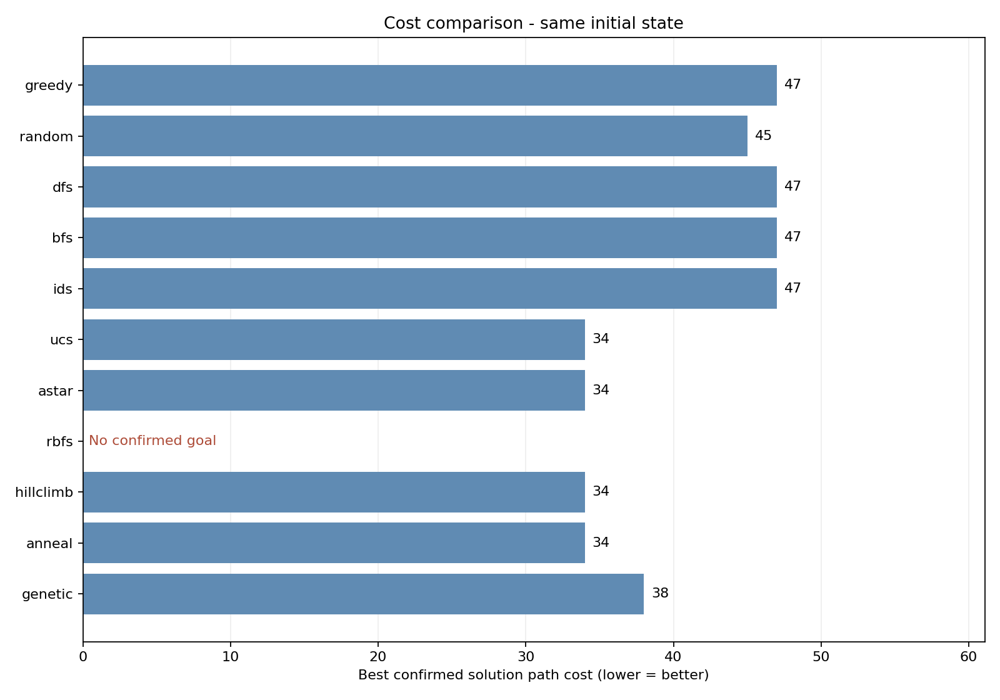
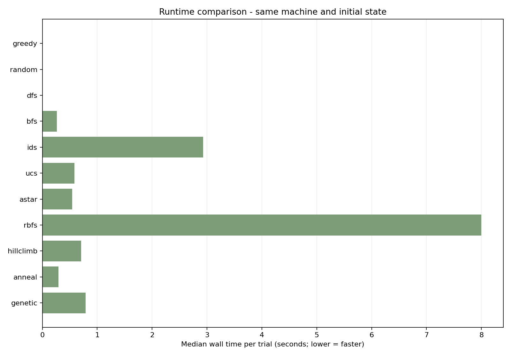
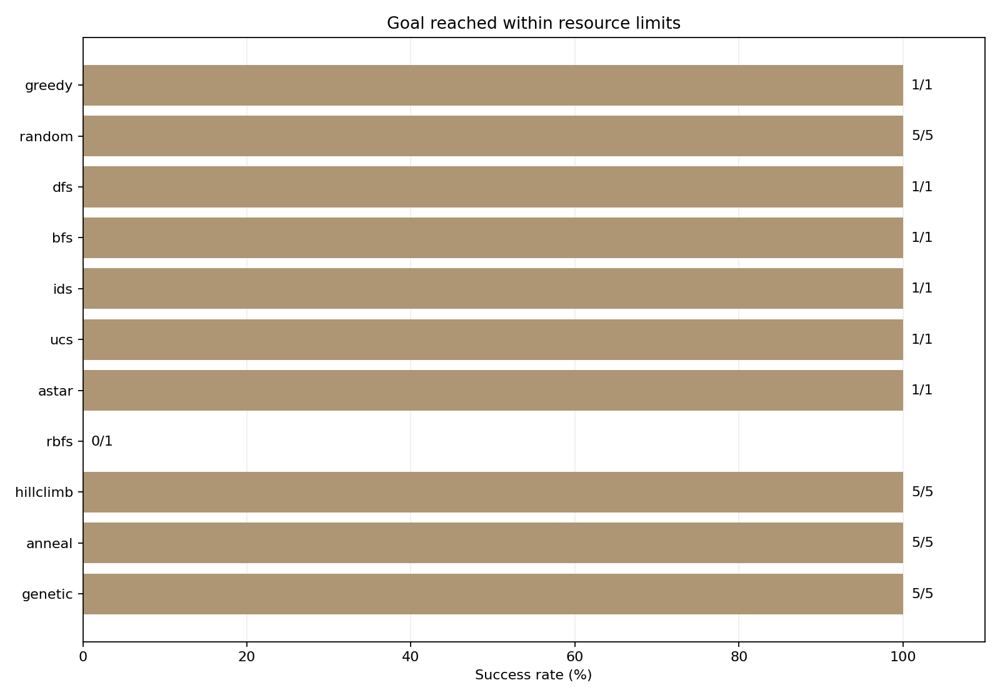

All algorithms start from the exact same initial state. Failed or timed-out methods are marked as unsolved, not assigned cost 0. Local Search uses random 30–35-gene paths. Graph expansions and evaluated path candidates are different work units and must not be directly equated.

[[1.0, 0.0], [0.0, 1.0], [0.0, 1.0], [1.0, 0.0]]
| Algorithm | Successes | Best cost | Median solved cost | Median time (s) | Median work | Work unit | Best seed | Interactive | GIF |
|---|---|---|---|---|---|---|---|---|---|
| greedy | 1/1 | 47 | 47 | 0.0004 | 7 | expanded_nodes | 42 | View interactive path | GIF |
| random | 5/5 | 45 | 61 | 0.0033 | 21 | expanded_nodes | 42 | View interactive path | GIF |
| dfs | 1/1 | 47 | 47 | 0.0010 | 7 | expanded_nodes | 42 | View interactive path | GIF |
| bfs | 1/1 | 47 | 47 | 0.2671 | 2473 | expanded_nodes | 42 | View interactive path | GIF |
| ids | 1/1 | 47 | 47 | 2.9312 | 26514 | expanded_nodes | 42 | View interactive path | GIF |
| ucs | 1/1 | 34 | 34 | 0.5846 | 5661 | expanded_nodes | 42 | View interactive path | GIF |
| astar | 1/1 | 34 | 34 | 0.5424 | 5326 | expanded_nodes | 42 | View interactive path | GIF |
| rbfs | 0/1 | — | — | 8.0006 | 41082 | expanded_nodes | 42 | — | — |
| hillclimb | 5/5 | 34 | 37 | 0.7093 | 2500 | path_evaluations | 46 | View interactive path | GIF |
| anneal | 5/5 | 34 | 36 | 0.2908 | 1075 | path_evaluations | 45 | View interactive path | GIF |
| genetic | 5/5 | 38 | 39 | 0.7908 | 2500 | path_evaluations | 44 | View interactive path | GIF |



For randomized algorithms, best cost is the minimum among successful trials; median solved cost includes only successful trials. The success rate uses all attempted trials. Timing includes algorithm execution, not chart creation. HTML shows the flow within each action; GIF shows one frame per valid action. Paths that did not reach Goal are labeled partial.